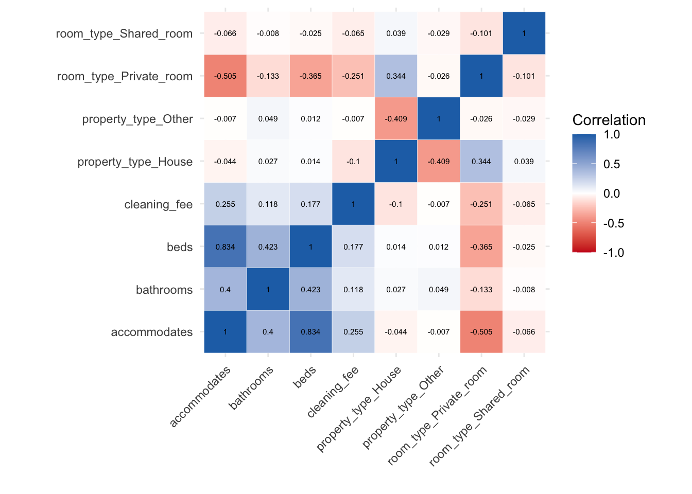
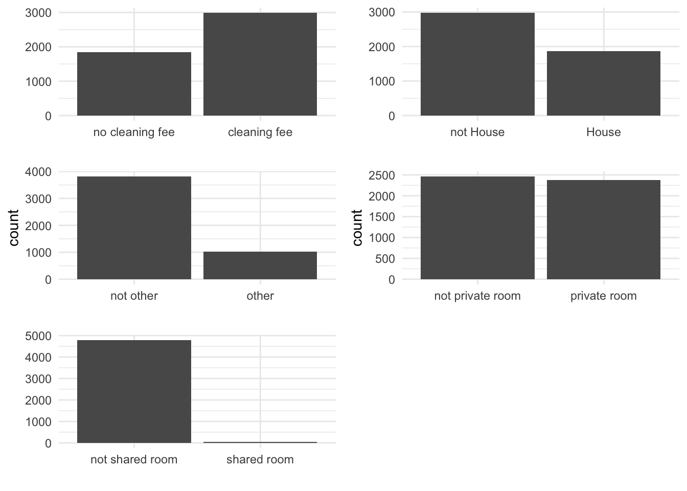
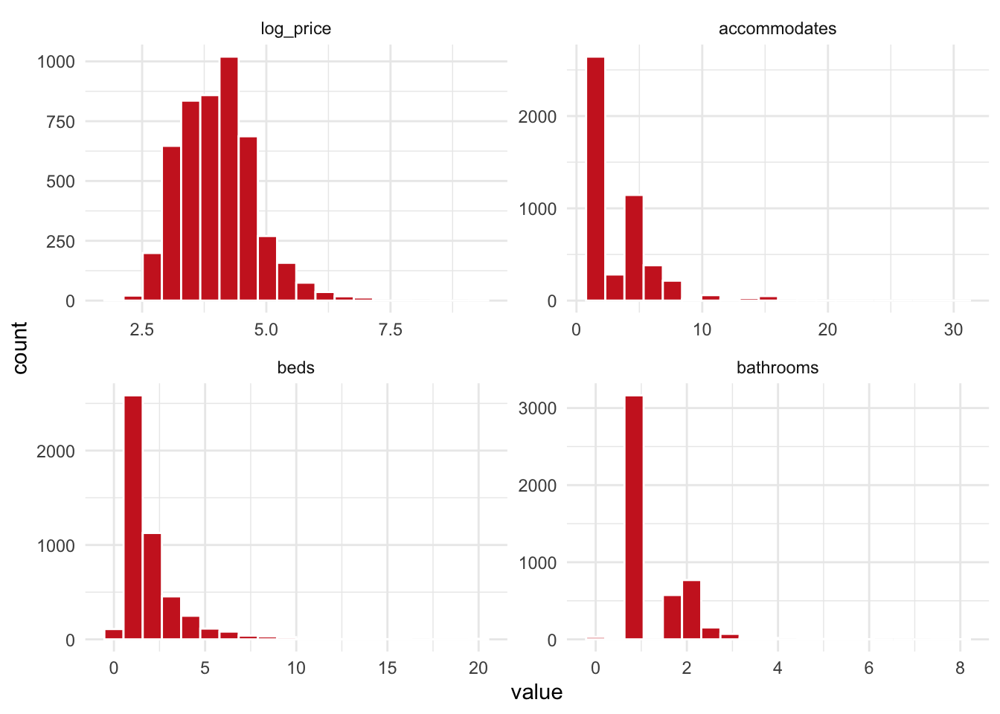

Chapter 3 Methods
The data used to train the model in this study, originated from Inside Airbnb, an open access platform, that makes lettings data publicly available. Lettings data from Manchester in November 2019, was used for this study. The original data was very noisy and had to be cleaned, transformed and pre-processed, prior to training.
3.1 Data pre-processing
The training data is made up of 4,846 observations and has 9 features. A list of the variables and their type is shown below, log_price being the target variable and the others the predictor variables. Given the messiness of the listings data, certain data pre-processing operations had to be done, in some cases some new variables had to be created.
| Variable | Type | Description |
|---|---|---|
| log_price | numeric | The log transformation of the price from the raw data. Transformed due to a skewed distribution. |
| accomodates | integer | No pre-processing was necessary for this variable. It is a measure of how many people the property accommodates. |
| beds | integer | No pre-processing was necessary for this variable. It is a measure of how many people the property accommodates. |
| bathrooms | numeric | No pre-processing was necessary for this variable. It is a measure of how many people the property accommodates. |
| cleaning_fee | numeric | This variable was transformed to a binary value, 1 indicating the property has a cleaning fee and 0 no cleaning fee. |
| property_type_House | numeric | This variable was transformed into a binary value, 1 indicating that the property is a house and 0 indicating it is not a House. |
| property_type_Other | numeric | This variable was transformed into a binary value, 1 indicating that the property house is of type “other” and 0 indicating it is not other. |
| room_type_Private_room | numeric | This variable was transformed into a binary variable, 1 indicating that the property’s room type is private and 0 indicating it is not private. |
| room_type_Share_room | numeric | This variable was transformed into a binary variable, 1 indicating that the property’s room type is shared and 0 indicating it is not shared. |
The following data pre-processing was necessary to achieve the formatting of variables in the table above:
## The price variable:
# Convert listing prices from dollars to numbers
listings$price = dollar_to_number(listings$price)
# Remove listings with price values of zeros:
listings=listings[listings$price>0,]
## The property_type and room_type variables:
listings$property_type_House = (listings$property_type == "House")+0
listings$property_type_Other = (listings$property_type == "Other")+0
listings$room_type_Private_room = (listings$room_type == "Private room")+0
listings$room_type_Shared_room = (listings$room_type == "Shared room")+0
## Filling in the data which is missing or NA, using the median value:
listings$bathrooms[is.na(listings$bathrooms)]=median(listings$bathrooms, na.rm=T)
listings$beds[is.na(listings$beds)]= median(listings$beds, na.rm=T)The first few entries of the pre-processed dataset are shown below:
| log_price | accommodates | beds | bathrooms | cleaning_fee | property_type_House | property_type_Other | room_type_Private_room | room_type_Shared_room |
|---|---|---|---|---|---|---|---|---|
| 4.174387 | 4 | 6 | 1.0 | 1 | 1 | 0 | 0 | 0 |
| 4.094345 | 2 | 1 | 1.5 | 0 | 0 | 0 | 1 | 0 |
| 3.526361 | 3 | 2 | 1.0 | 1 | 0 | 1 | 0 | 0 |
| 4.007333 | 2 | 2 | 1.0 | 0 | 1 | 0 | 0 | 1 |
| 6.856462 | 2 | 1 | 1.0 | 0 | 0 | 0 | 1 | 0 |
| 4.094345 | 2 | 1 | 1.0 | 0 | 1 | 0 | 1 | 0 |
Furthermore, the correlations between the predictor variables can be visualised. There seems to be a high correlation between the beds and accommodates (0.804) variables, suggesting a colinearity, however given that the scope of this study is predictive modeling, this shouldn’t be an issue.

Once the data was pre-processed and ready to be utilised, training and test datasets were specified, using the createDataPartition function, to ensure that the distribution of both sets, resembles the distribution of the whole dataset.
# create training set partition using create data partition:
training_index=createDataPartition(data_anal$log_price, p=0.7, list=F)
train_x=data_anal[training_index,]
test_x=data_anal[-training_index,]Distribution of Categorical variables:

Distribution of continuous variables:

3.2 The Random Forest Model
The regression model has been defined, with log_price as the target variable and the remaining 8 variables as predictors. The model is displayed below:
reg.mod=log_price~ accommodates + beds + bathrooms + cleaning_fee + property_type_House + property_type_Other + room_type_Private_room +
room_type_Shared_roomAn initial model can be created, using the RF implementation from the randomForest package. The model is set to run with 5,000 trees, to see if we get a model with the lowest error within this number.
rf1 <- randomForest( formula=reg.mod,
ntree=5000,
data=train_x
)